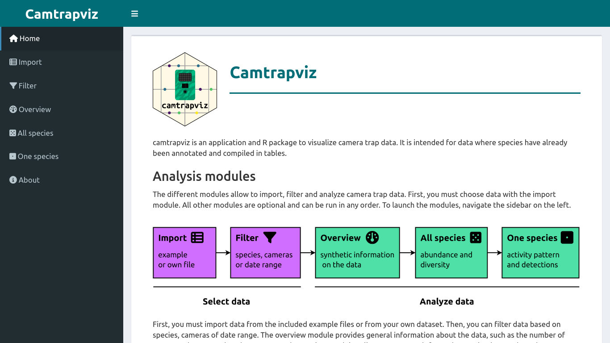
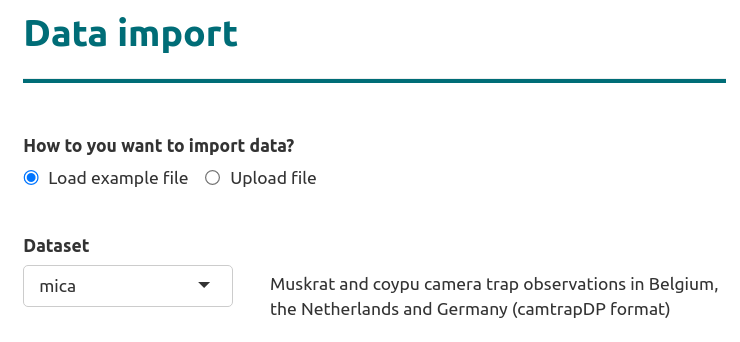
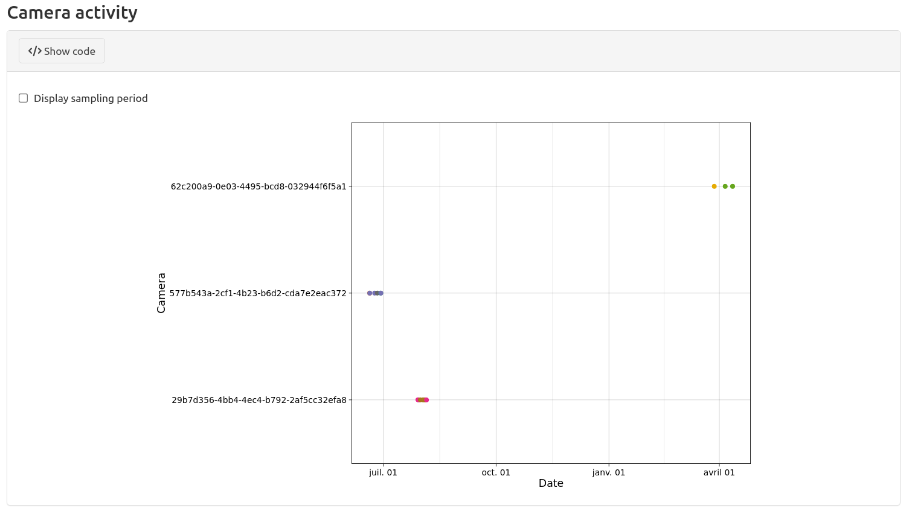
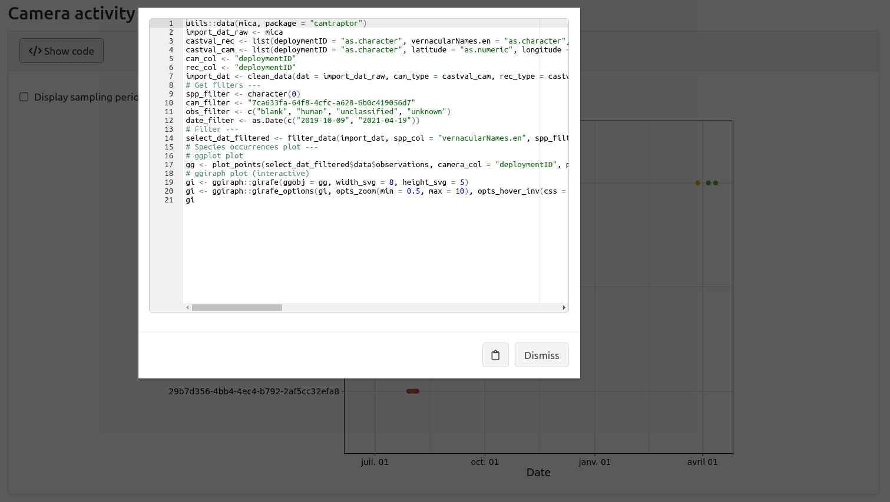
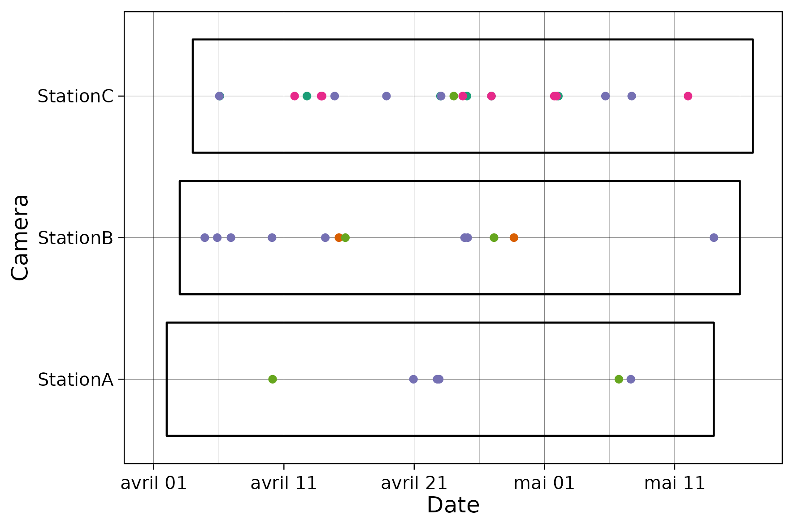
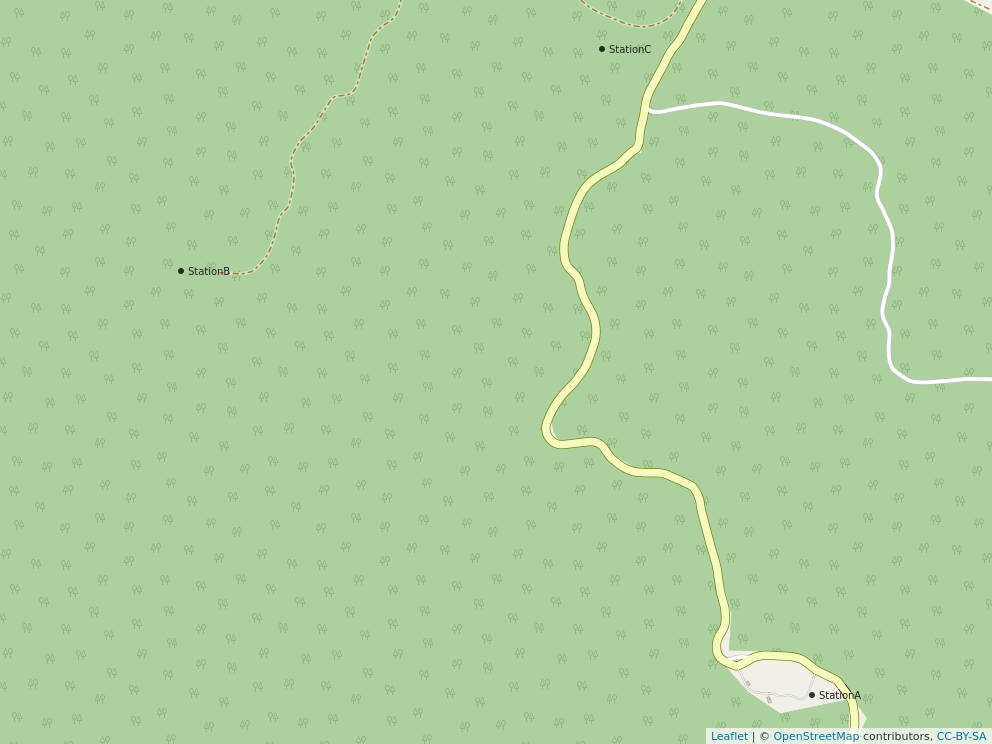
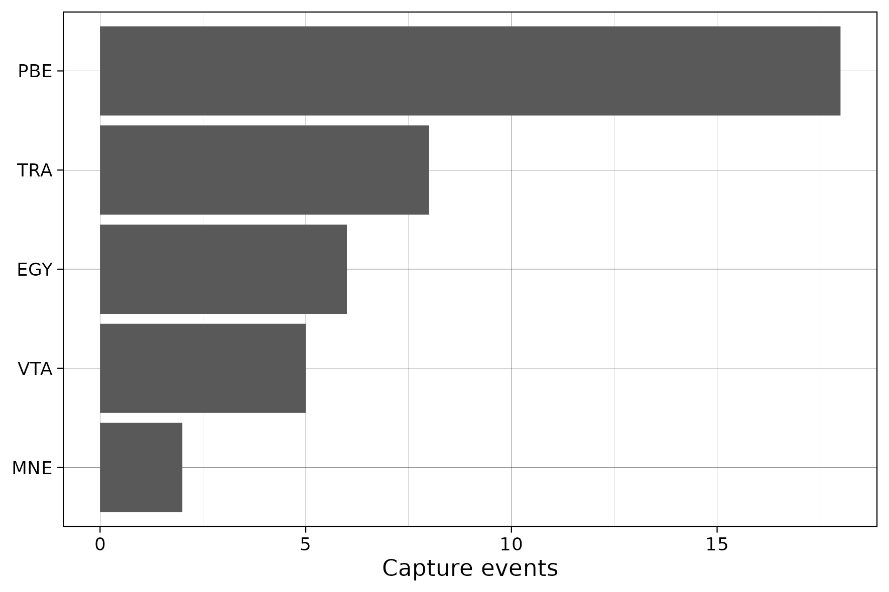
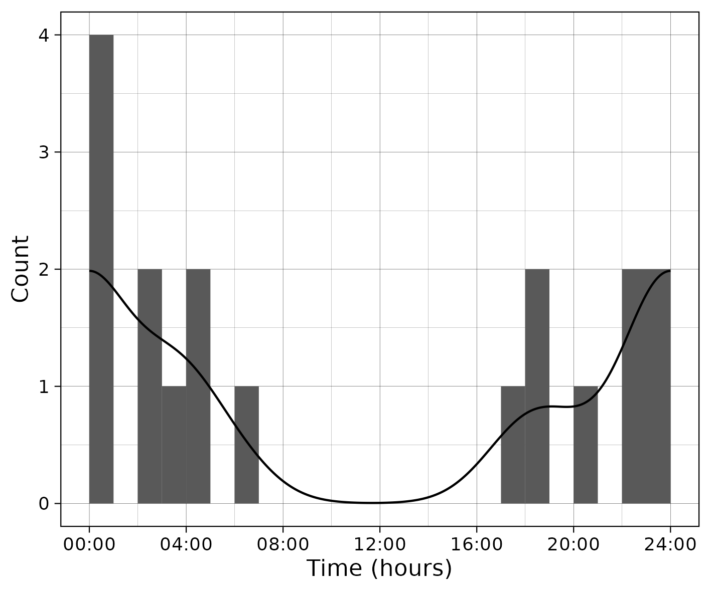

This package is currently under development
camtrapviz is a R and Shiny package to visualize and summarize camera trap data. It is intended for camera trap data where species have already been tagged and compiled in tables.
The package website can be found at: https://lisanicvert.github.io/camtrapviz/.
Installation
To install the package, use:
devtools::install_github("https://github.com/LisaNicvert/camtrapviz",
build_vignettes = TRUE)Functions
Shiny interface
A Shiny interface run from your computer allows to analyze camera trap data interactively. To run the app, use:

Two example datasets are provided:
a camtrapDP datapackage from the camtraptor R package.
You can also choose data to analyze from your computer.

The Shiny app uses Shinymeta to display and export the underlying code to the Shiny app.

Data reading and formatting
The package implements functions to read and clean data (see vignettes on data import and cleaning and on data filtering).
Dataviz
There are several functions to visualize data that are illustrated below (using the example dataset from the camtrapR package).
First, you can plot the observations of each camera versus time:

You can also plot the cameras on a map:

It is also possible to plot capture event counts:

You can also plot the activity histogram and curve of the species:

For more details on plots, see the vignette on plots and the vignette on activity plots.